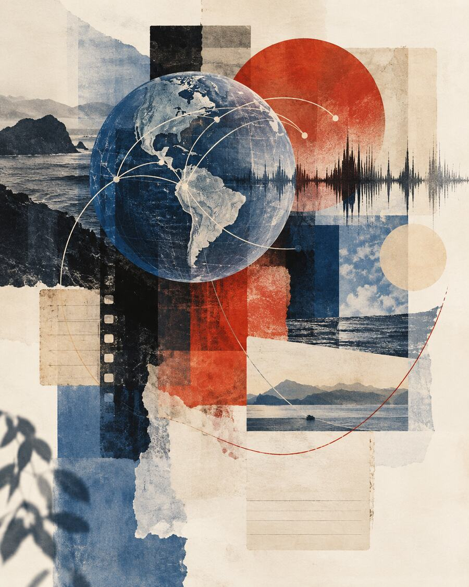

Gestión documental en los sectores público y privado.
Archivista · Consultora · Docente universitaria
Nelly
Panesso
Archivos que generan valor. Información que respalda decisiones.
Conocer Contenido Archivístico Explorar servicios especializados
02 Perfil profesional
Gestión documental con visión estratégica y compromiso social.
Soy archivista de la Universidad de Antioquia y magíster en Gestión Documental y Administración de Archivos de la Universidad de La Salle. Desde 2008 he trabajado con entidades públicas y empresas privadas, integrando la gestión técnica de archivos, la consultoría y la dirección de equipos.
He participado en la formulación y el desarrollo de proyectos archivísticos institucionales y liderado procesos de administración documental de alcance nacional. Soy docente universitaria de pregrado desde 2015 y de posgrado desde 2021, vinculando la experiencia profesional con la formación académica.
Mi compromiso con la archivística también se expresa en el liderazgo y la representación gremial, así como en Contenido Archivístico, el proyecto de divulgación que fundé para compartir conocimientos, experiencias e historias que acercan la profesión a la sociedad.
Creo en el valor de la información para fortalecer organizaciones, respaldar decisiones, garantizar derechos, preservar la memoria y contribuir a una sociedad más transparente e informada.
Pregrado desde 2015 y posgrado desde 2021.
Equipo nacional de administración documental coordinado en Coordinadora Mercantil.
Creadora y directora de Contenido Archivístico.
03 Trayectoria profesional
Dirección · docencia · consultoría · liderazgo
Una trayectoria que conecta instituciones, profesionales y conocimiento.
Experiencia de gestión, orientación académica y colaboración con entidades y redes profesionales, combinando resultados técnicos y capacidad de articulación entre personas.
Diseño de proyectos y liderazgo en gestión documental
Desde 2016 diseñé propuestas y brindé asesoría técnica y metodológica a proyectos de gestión documental desarrollados a través de la Escuela Interamericana de Bibliotecología de la Universidad de Antioquia para entidades públicas. Esta experiencia incluyó instrumentos archivísticos, programas de gestión documental y revisión de informes técnicos. Posteriormente, dirigí el área de Administración Documental de Coordinadora Mercantil S. A. (2018–2022), coordinando un equipo de más de 10 personas y liderando procesos de estandarización, mejoramiento y transición hacia la gestión electrónica de documentos de alcance nacional.
Formación universitaria
Docente de pregrado desde 2015 y de posgrado desde 2021 en la Universidad de Antioquia y la Universidad de La Salle. He impartido asignaturas de archivística, valoración documental, instrumentos archivísticos, transparencia y acceso a la información pública.
Proyectos institucionales
He participado en proyectos de asesoría y consultoría para municipios, entidades públicas y organizaciones, orientados a la planeación y al fortalecimiento de sus procesos documentales.
Redes profesionales
Fui presidenta de ASEIBI (2018–2020), he hecho parte de la Sociedad Colombiana de Archivistas y representado al Colegio Colombiano de Archivistas en el Consejo Distrital de Archivos de Turbo en 2025, hago parte de la Red de Emprendedoras en Archivística de Latinoamérica - REAL desde el 2024 y he sido conferencista en espacios académicos nacionales e internacionales.
04 Proyecto de divulgación
Contenido Archivístico
Conocimiento, historias y oportunidades para conectar archivos y sociedad.
En abril de 2024 creé Contenido Archivístico, una iniciativa independiente para difundir conocimiento, compartir experiencias y mostrar la importancia de la archivística en nuestra sociedad.
Contenido Archivístico está presente en YouTube, Spotify, Instagram y un canal de WhatsApp. Cada plataforma tiene un propósito: compartir entrevistas, escuchar experiencias, contar historias reales y difundir oportunidades para la comunidad archivística.
05 Contenido Archivístico en cifras
Organización · continuidad · redes profesionales
Un proyecto desarrollado con dirección y trabajo sostenido.
Su gestión incluye planeación editorial, coordinación con profesionales, organización de la biblioteca audiovisual, difusión académica y construcción de relaciones profesionales.
145Entrevistas, conferencias y otros videos
22Países representados
8Temáticas
137Invitados y expositores
Publicaciones audiovisuales por año
Distribución de los contenidos disponibles en esta biblioteca, no estadísticas en tiempo real de todo el canal de YouTube.
Biblioteca audiovisual
Busca por invitado, título, año, país o temática.
Explora 145 entrevistas, conferencias y otros contenidos audiovisuales organizados en ocho temáticas. Busca por invitado, título, año o país.
06 Servicios profesionales
Información · valor agregado
La información como activo estratégico.
01 / CONSULTORÍA
Consultoría y asesoría
Planeación estratégica, dirección, organización y seguimiento de la gestión documental y la administración de archivos, articulando todos los sistemas de la organización, de tal modo que garantice el cumplimiento normativo y el acceso oportuno a la información para la toma de decisiones informadas.
Solicitar una propuesta02 / ACOMPAÑAMIENTO TÉCNICO ESPECIALIZADO
Acompañamiento técnico especializado
A organizaciones que estén adelantando proyectos archivísticos en organización de archivos, mediante actividades de clasificación, ordenación y descripción, o procesos de digitalización de documentos en soporte papel.
Consultar acompañamiento técnico03 / FORMACIÓN Y CAPACITACIÓN
Cursos, talleres y conferencias
Diseño y desarrollo de cursos, talleres y conferencias sobre gestión documental, administración de archivos, instrumentos archivísticos y de gestión de información pública, transparencia y acceso a la información pública.
Servicio ofrecido para entidades públicas, empresas privadas, agremiaciones, instituciones de educación superior y centros de formación técnica y tecnológica.
Consultar sobre formación04 / ACOMPAÑAMIENTO ACADÉMICO
Acompañamiento académico
Acompañamiento académico para estudiantes de pregrado y posgrado en Archivística o gestión documental de cualquier institución educativa. Para obtener un descuento especial, debe acreditar su calidad de estudiante.
Consultar acompañamiento académico05 / NOTARY PUBLIC · MASSACHUSETTS, EE. UU.
Notary Public en Massachusetts
Servicio de Notary Public exclusivamente en el estado de Massachusetts, Estados Unidos, con atención en inglés y español. Si tienes familiares o amigos en este estado, puedes compartirles la información para que conozcan el servicio y cómo solicitarlo.
Comisión de Notary Public obtenida. Solicita información y cotización para una cita presencial; la disponibilidad y los detalles se confirman previamente.
No soy abogada y no tengo autoridad para dar asesoría sobre inmigración ni otros asuntos legales.
Conocer más sobre Notary Public07 Reconocimientos
Reconocimiento profesional
Distinciones por el compromiso con la archivística.
Reconocimientos recibidos por aportes al fortalecimiento de la profesión y por la participación en instancias de representación archivística.
Archivo General de la Nación de Colombia
Reconocimiento por aportes a la consolidación y fortalecimiento de la profesión archivística.
Premio al Mérito Archivístico Juan Carlos García Fuentes
Otorgado por Archivistas en Red por las contribuciones a la gestión documental y a la profesión archivística en Colombia.
Alcaldía Distrital de Turbo, Antioquia
Reconocimiento por la labor como delegada del Colegio Colombiano de Archivistas ante el Consejo Distrital de Archivos de Turbo durante 2024–2025.
08 Testimonios
Voces de la comunidad
Aprendizajes compartidos alrededor de Contenido Archivístico.
Participantes y profesionales han compartido sus experiencias y comentarios sobre el valor formativo, el intercambio de conocimientos y los aprendizajes promovidos por el proyecto.
Las reseñas originales están disponibles en el espacio de la comunidad.
Leer testimonios en PadletConversemos.
Selecciona el tema de tu consulta, escribe tu nombre si lo deseas y cuéntame brevemente qué necesitas. Luego elige WhatsApp o correo electrónico: se abrirá un mensaje preparado para que lo revises y envíes desde la aplicación correspondiente.